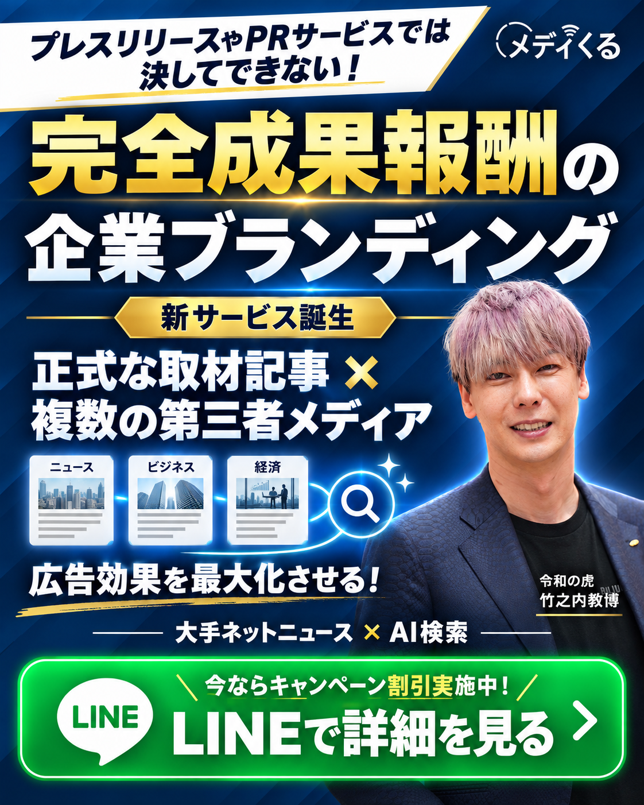
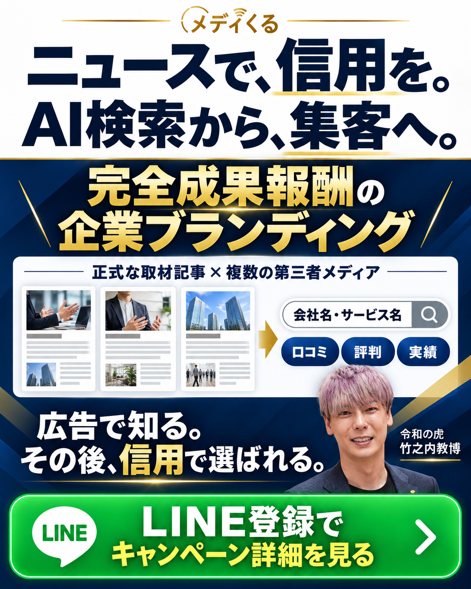

NEW CREATIVE / DESIGN REVIEW
完全成果報酬・第三者メディア・AI検索。伝える順番を変えたデザイン案です。
デザイン確認用の制作案です。画像をタップすると拡大できます。

プレスリリースとの違いと、第三者メディアの活用を強く見せる案。

白背景で読みやすく、取材記事から口コミ・評判・実績へつなぐ案。
24時間365日とAI検索を前面に出した案。
既存の7種類を見る →